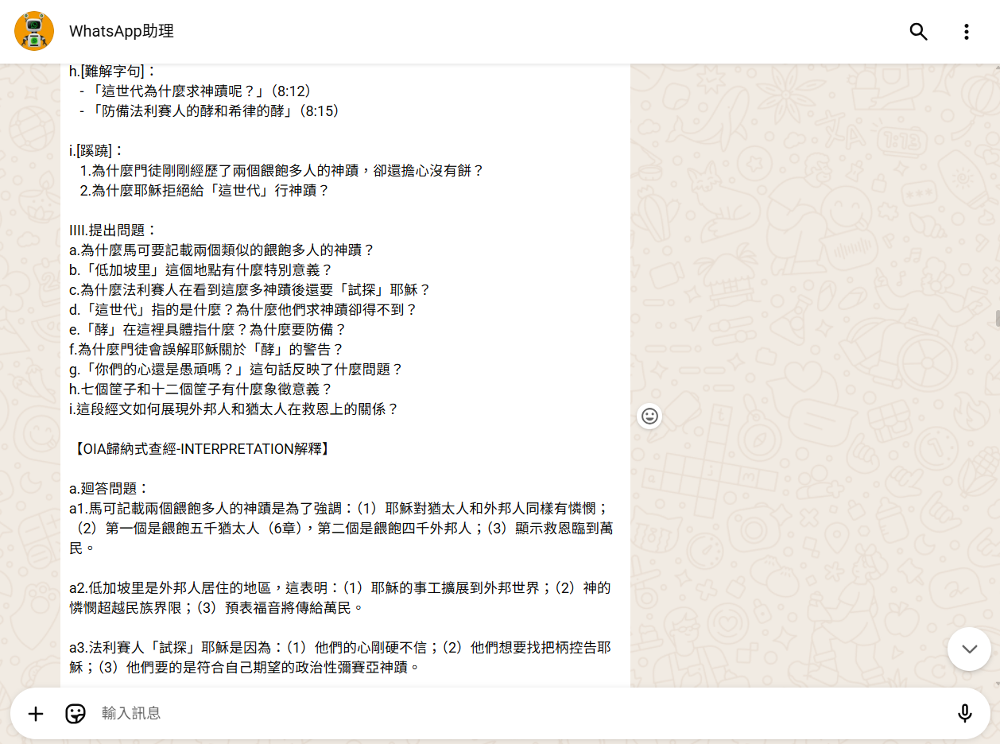
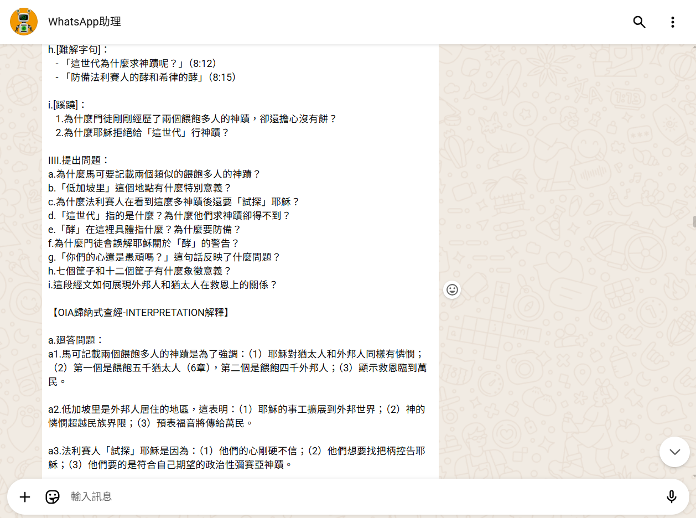
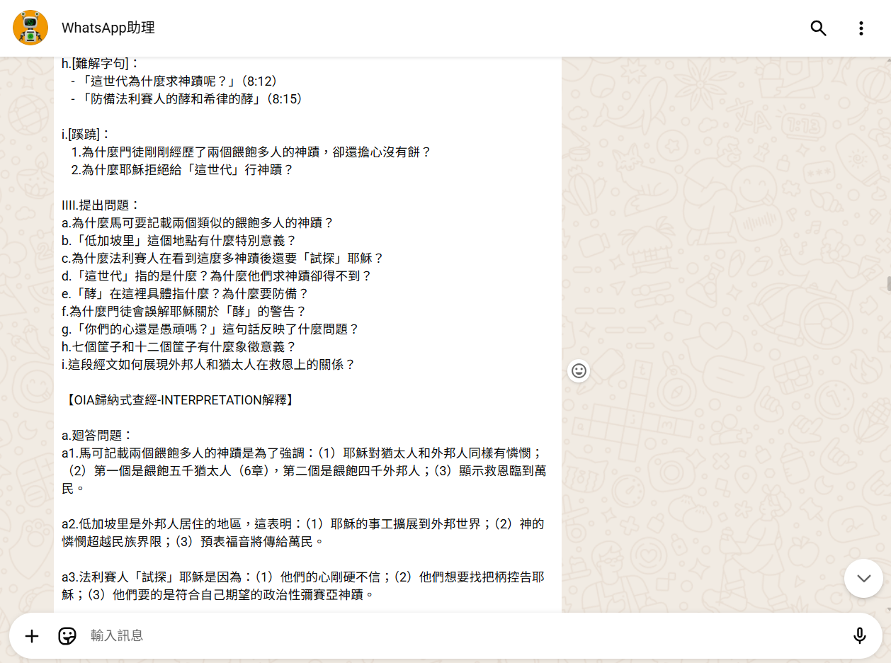
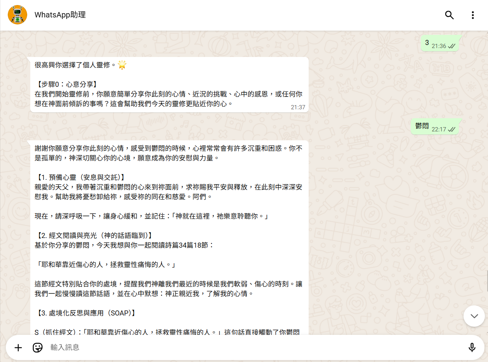
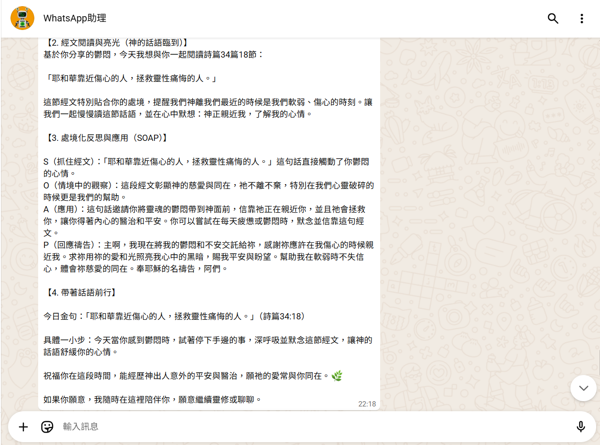
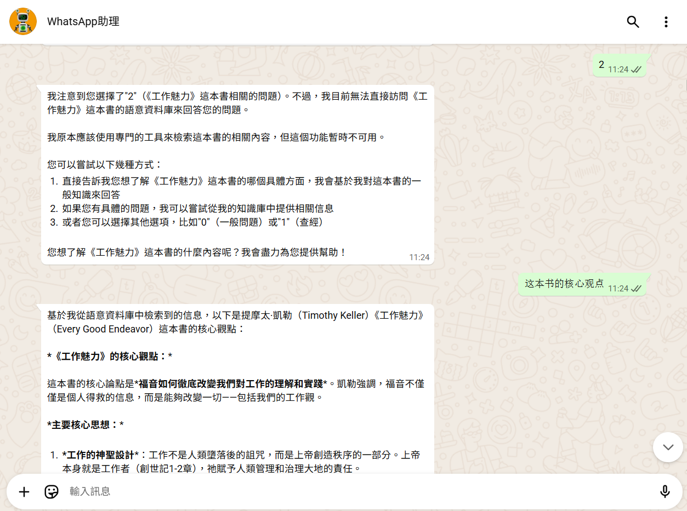
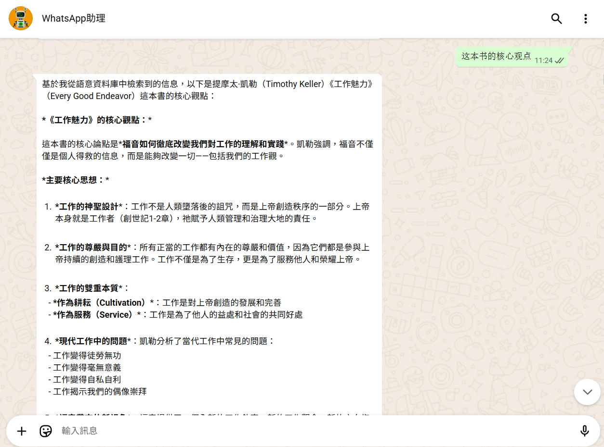
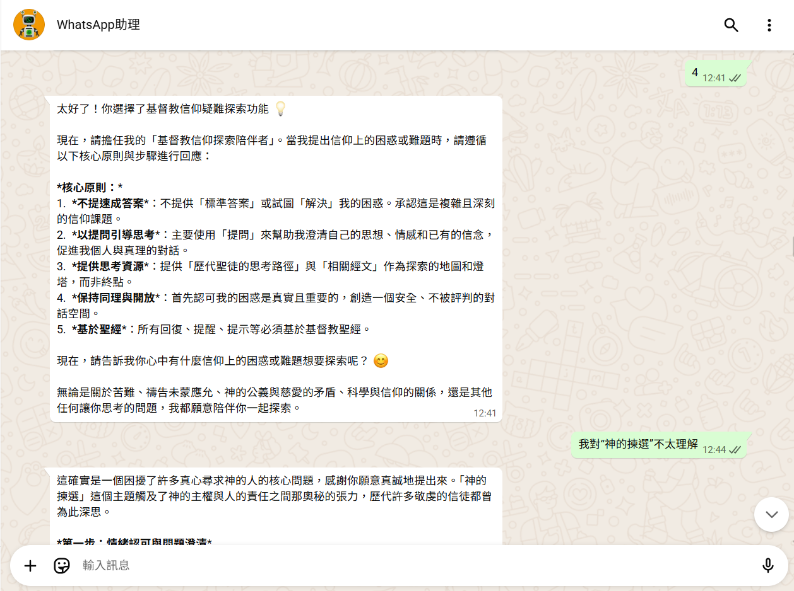

實際使用效果展示
看看實際用戶如何使用AI信仰助手，體驗智能查經、靈修引導和信仰陪伴
查經功能
 


智能查經對話實例
用戶詢問馬可福音8:1-21，AI助手提供完整的OIA分析： 觀察經文結構、解釋關鍵詞義、應用於現代生活。
- 經文背景分析
- OIA觀察解釋應用分析
- 生活化的應用問題
- 個人禱告及反思引導
用戶回饋：「以前讀經很多地方不明白，現在有AI助手解釋，更容易理解了！」
靈修引導


個人化靈修引導
根據用戶當天的心情狀態（壓力、喜樂、憂傷），AI推薦合適的經文， 並提供禱告建議和默想問題。
- 情緒感知與回應
- 相關經文推薦
- 個人化禱告指引
- 每日靈修提醒
用戶回饋：「就像有位屬靈導師隨時陪伴，知道我需要的經文和安慰。」
閱讀輔助



書籍閱讀輔助
用戶閱讀《效法基督》時遇到困難概念，AI提供清晰解釋， 並提出反思問題幫助消化內容。
- 困難概念解釋
- 章節重點摘要
- 個人反思問題
用戶回饋：「以前讀不懂的神學書籍，現在有AI幫忙解釋，收穫很多！」
